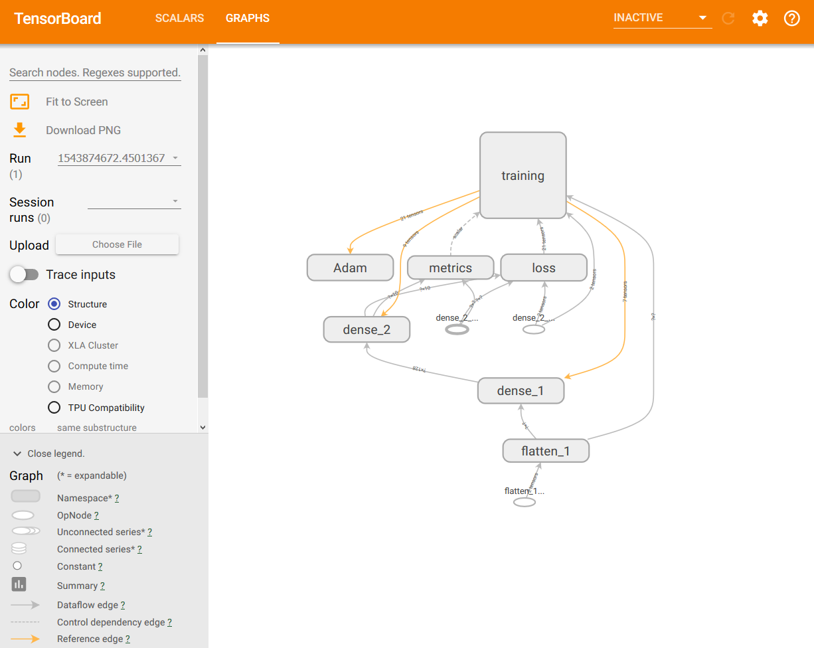

Using tensorboard with Keras
general workflow
Let's see how we can get tensorboard to work with a Keras-based Tensorflow code.
import tensorflow as tf
import keras
import numpy as np
In this example, we will be using the fashion MNIST dataset to do some basic computer vision, where we will train a Keras neural network to classify items of clothing.
In order to import the data we will be using the built in function in Keras :
keras.datasets.fashion_mnist.load_data()
The model is a very simple neural network consisting in 2 fully connected layers. The model loss function is chosen in order to have a multiclass classifier : "sparse_categorical_crossentropy"
Finally, let's train the model for 5 epochs
##get and preprocess the data
fashion_mnist = keras.datasets.fashion_mnist
(train_images, train_labels), (test_images, test_labels) = fashion_mnist.load_data()
train_images = train_images / 255.0
test_images = test_images / 255.0
## define the model
model = keras.Sequential([
keras.layers.Flatten(input_shape=(28,28)),
keras.layers.Dense(128, activation="relu"),
keras.layers.Dense(10, activation="softmax")
])
model.compile(optimizer="adam",
loss = "sparse_categorical_crossentropy",
metrics = ["accuracy"])
model.fit(train_images, train_labels, epochs=5)
Epoch 1/5
60000/60000 [==============================] - 9s 143us/step - loss: 0.4939 - acc: 0.8254
Epoch 2/5
60000/60000 [==============================] - 11s 182us/step - loss: 0.3688 - acc: 0.8661
Epoch 3/5
60000/60000 [==============================] - 10s 169us/step - loss: 0.3305 - acc: 0.8798
Epoch 4/5
60000/60000 [==============================] - 21s 350us/step - loss: 0.3079 - acc: 0.8874
Epoch 5/5
60000/60000 [==============================] - 18s 302us/step - loss: 0.2889 - acc: 0.8927
<keras.callbacks.History at 0x235c1bc1be0>
During the training we can see the process, including the loss and the accuracy in the output.
test_loss, test_acc = model.evaluate(test_images, test_labels)
print(f"Test accuracy : {test_acc}")
10000/10000 [==============================] - 1s 67us/step
Test accuracy : 0.8763
When the model finishes training, we get an accuracy of about 87%, and we output some sample predictions
predictions = model.predict(test_images)
print(predictions[0])
[1.8075149e-05 3.6810281e-08 6.3094416e-07 5.1111499e-07 1.6264809e-06
3.5973577e-04 1.0840570e-06 3.1453002e-02 1.7062060e-06 9.6816361e-01]
This kind of process only gives us minimal information during the training process.
Setting up tensorboard
To make it easier to understand, debug, and optimize TensorFlow programs, a suite of visualization tools called TensorBoard is included. You can use TensorBoard to visualize your TensorFlow graph, plot quantitative metrics about the execution of your graph, and show additional data like images that pass through it. When TensorBoard is fully configured, it looks like this:

Let's start by importing the time library and tensorboard itself. It can be found in tensorflow.python.keras.callbacks.
from time import time
from tensorflow.python.keras.callbacks import TensorBoard
After having imported our data and defined our model, we specify a log directory where the training information will get written to.
#keep in mind that we already imported the data and defined the model.
tensorboard = TensorBoard(log_dir=f"logs/{time()}")
Finally, to tell Keras to call back to TensorBoard we refer to the instant of TensorBoard we created.
model.compile(optimizer="adam",
loss = "sparse_categorical_crossentropy",
metrics = ["accuracy"])
Now, we need to execute the TensorBoard command pointing at the log directory previously specified.
tensorboard --logdir=logs/
TensorBoard will return a http address
TensorBoard 1.12.0 at http://localhost:6006 (Press CTRL+C to quit)
Now, if we retrain again, we can take a look in TensorBoard and start investigating the loss and accuracy
model.fit(train_images, train_labels, epochs=5, callbacks=[tensorboard])
Epoch 1/5
60000/60000 [==============================] - 41s 684us/step - loss: 0.4990 - acc: 0.8241
Epoch 2/5
60000/60000 [==============================] - 49s 812us/step - loss: 0.3765 - acc: 0.8648
Epoch 3/5
60000/60000 [==============================] - 46s 765us/step - loss: 0.3392 - acc: 0.8766
Epoch 4/5
60000/60000 [==============================] - 48s 794us/step - loss: 0.3135 - acc: 0.8836
Epoch 5/5
60000/60000 [==============================] - 49s 813us/step - loss: 0.2971 - acc: 0.8897
<keras.callbacks.History at 0x235be1c76d8>
TensorBoard also give access to a dynamic visualization of the graph
